不要问我为什么是粉色，因为我喜欢粉色
开发工具
- 集成开发环境：Pycharm
- Python
- Pyside2
- 计算器
- 佳语翻译器
- 解方程
- 乱码编译器
- 商城（皮肤/设置）
- 小鸟管道
开发工具
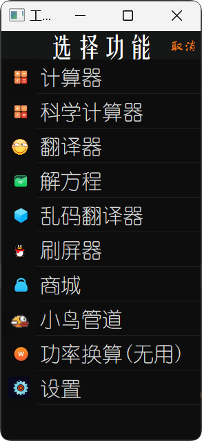
功能
包括计算器和科学计算器，科学计算器功能更多，支持键盘输入，有输入音效
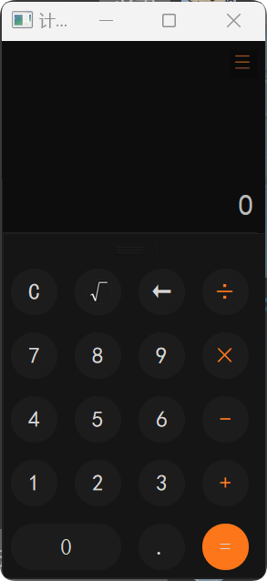
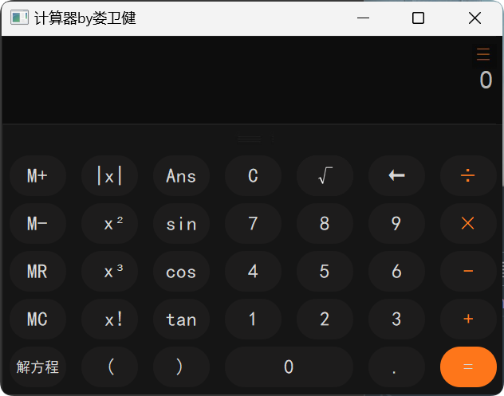
把用户输入的文字转化为意义不明的文字，并且可以通过该软件给还原回来。。。。
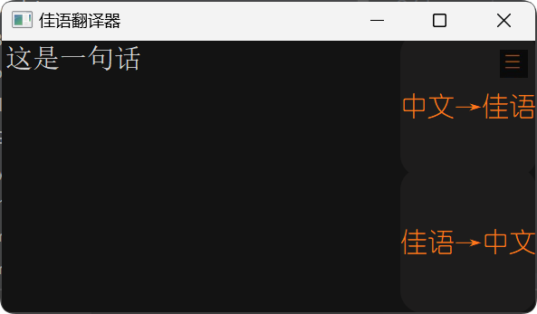
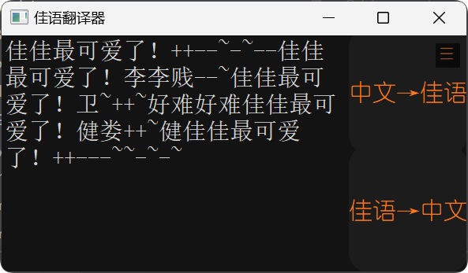
不必多言，就是解方程的东西，初中学一元二次方程的时候写了这个软件，用来懒得写求根公式
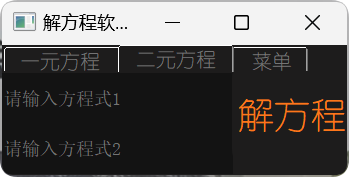
就是加密，比刚刚那个高级一点，这个对于同一段文字会生成随机的密钥，加强随机性，需要密钥和加密后的文字同时输入才能得到原文字（原理都是基于凯撒密码）
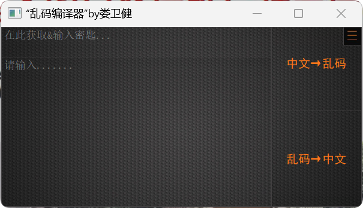
当初做了金币系统，可以买皮肤，但是懒得做皮肤了。。。。
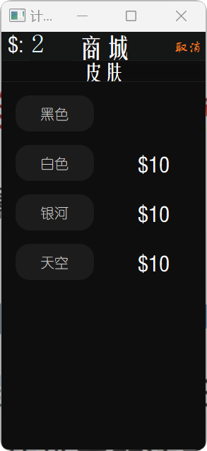
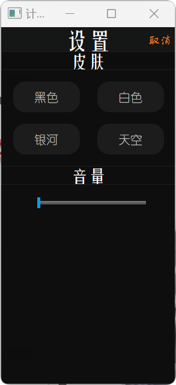
前面提到金币系统，那么金币从哪里来呢？就是这个游戏了
其实我本来只是想做一个计算器，后来加的功能越来越多。。。甚至有了游戏，所以干脆改名工具箱了
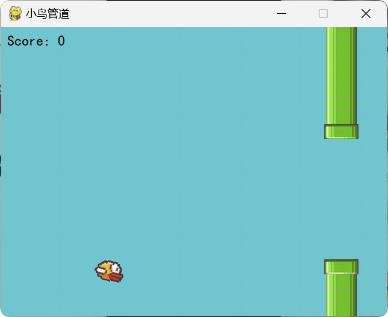
源码就不放了，想看加我qq
后来增加了新的UI界面，但是没有把功能放进去，但是UI还是挺好看的，如图
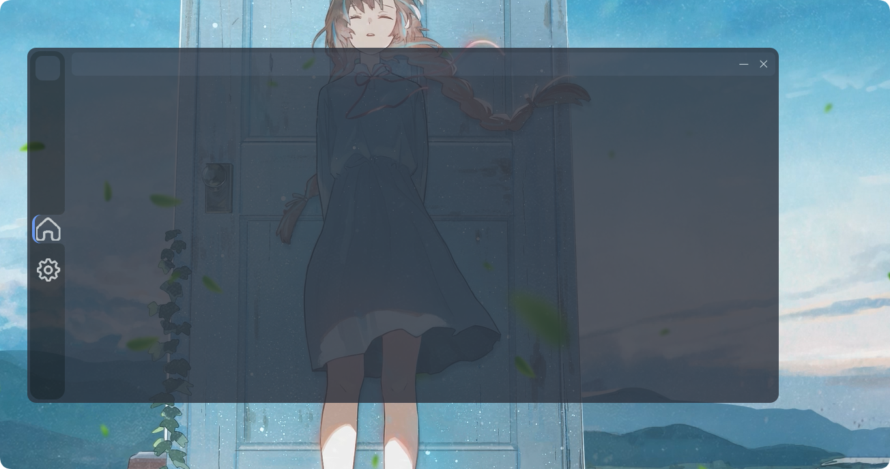
还可以，但是没有再完善了
点我转跳到github以下为main.py的代码，也有近千行了
import keyboard #qq号：2141703630有兴趣交流哦
from PySide2.QtWidgets import QApplication, QMessageBox
from PySide2.QtUiTools import QUiLoader
import pygame
import math
from sympy import *
from pygame.mixer import *
import time
import json
import Bird
import Pipe
import pygame
from pygame.locals import *
import sys
sys.setrecursionlimit(5000)
lmresulr=''
x = Symbol('x')
y = Symbol('y')#导入
result1 = ''
lfresult=''
pygame.mixer.init()
pygame.mixer.music.load('dazi.mp3')
pygame.mixer.music.set_volume(1.0)
shuru=''
xianshi='0'
zxianshi='0'
zxianshi2=''
lastwin='win1'
rt=''
pan=''
m=0
WIDTH, HEIGHT = 640, 480
running =False
from Game6 import main
class Window1:
def __init__(self):
self.ui = QUiLoader().load('win1.ui')#动态加载ui
self.ui.bt1.clicked.connect(lambda:self.cao1("1"))
self.ui.bt2.clicked.connect(lambda:self.cao1("2"))
self.ui.bt3.clicked.connect(lambda:self.cao1("3"))
self.ui.bt4.clicked.connect(lambda:self.cao1("4"))
self.ui.bt5.clicked.connect(lambda:self.cao1("5"))
self.ui.bt6.clicked.connect(lambda:self.cao1("6"))
self.ui.bt7.clicked.connect(lambda:self.cao1("7"))
self.ui.bt8.clicked.connect(lambda:self.cao1("8"))
self.ui.bt9.clicked.connect(lambda:self.cao1("9"))
self.ui.bt0.clicked.connect(lambda:self.cao1("0"))
self.ui.btdian.clicked.connect(lambda:self.cao7())
self.ui.btcheng.clicked.connect(lambda:self.cao3("×"))
self.ui.btchu.clicked.connect(lambda:self.cao6(""))
self.ui.btjia.clicked.connect(lambda:self.cao3("+"))
self.ui.btjian.clicked.connect(lambda:self.cao3("-"))
self.ui.btdeng.clicked.connect(lambda:self.cao2())
self.ui.bttui.clicked.connect(lambda:self.cao4())
self.ui.btc.clicked.connect(lambda:self.cao5())
self.ui.btmenu.clicked.connect(lambda:self.win2())
self.ui.btyan.clicked.connect(lambda:self.cao8())
self.ui.xianshi.setText(zxianshi)
self.maxnum=16
if __name__ == "__main__":
keyboard.add_hotkey("1",lambda:self.cao1("1"))
keyboard.add_hotkey("2",lambda:self.cao1("2"))
keyboard.add_hotkey("3",lambda:self.cao1("3"))
keyboard.add_hotkey("4",lambda:self.cao1("4"))
keyboard.add_hotkey("5",lambda:self.cao1("5"))
keyboard.add_hotkey("6",lambda:self.cao1("6"))
keyboard.add_hotkey("7",lambda:self.cao1("7"))
keyboard.add_hotkey("8",lambda:self.cao1("8"))
keyboard.add_hotkey("9",lambda:self.cao1("9"))
keyboard.add_hotkey("0",lambda:self.cao1("0"))
keyboard.add_hotkey("+",lambda:self.cao3("+"))
keyboard.add_hotkey("-",lambda:self.cao3("-"))
keyboard.add_hotkey("*",lambda:self.cao3("×"))
keyboard.add_hotkey("/",lambda:self.cao6(""))
keyboard.add_hotkey("backspace",lambda:self.cao4())
keyboard.add_hotkey("enter",lambda:self.cao2())
keyboard.add_hotkey("ctrl+backspace",lambda:self.cao5())
self.ui.xianshi.setText(str(0))
self.ui.xianshi.setText(zxianshi)
self.ui.xianshi2.setText(zxianshi2)
def cao1(self,intt):
global shuru,xianshi,zxianshi,zxianshi2
if len(shuru)<=self.maxnum+1:
if xianshi=="0":
xianshi=''
pygame.mixer.music.play()
pygame.mixer.music.play()
shuru+=intt
xianshi+=intt
zxianshi=xianshi
zxianshi2=''
self.ui.xianshi2.setText('')
self.ui.xianshi.setText(xianshi)
def cao2(self):
pygame.mixer.music.play()
pygame.mixer.music.play()
global shuru,xianshi,zxianshi,zxianshi2,rt
self.ui.xianshi2.setText(xianshi+"=")
result=shuru.replace("÷","/")
result=shuru.replace("×","*")
rt=str(eval(result))
self.ui.xianshi.setText(rt)
zxianshi2=xianshi+'='
zxianshi=str(eval(result))
shuru =""
xianshi="0"
def cao3(self,intt):
global shuru,xianshi
num=len(shuru)
if xianshi!="0" or intt=="-":
if len(shuru)<=self.maxnum:
if shuru[num-1:] in ["+","-","×","/"]:
pygame.mixer.music.play()
pygame.mixer.music.play()
shuru=shuru[:-1]
shuru+=intt
xianshi=xianshi[:-1]
xianshi+=intt
self.ui.xianshi.setText(xianshi)
else:
if xianshi=="0":
xianshi=''
pygame.mixer.music.play()
pygame.mixer.music.play()
xianshi+=intt
shuru+=intt
self.ui.xianshi.setText(xianshi)
self.ui.xianshi.setText(shuru)
def cao4(self):
global shuru,xianshi
pygame.mixer.music.play()
pygame.mixer.music.play()
text=self.ui.xianshi.text()
if text:
xianshi=text[:-1]
shuru=xianshi
else:
if xianshi!="0":
if xianshi!="":
shuru=shuru[:-1]
xianshi=xianshi[:-1]
if xianshi=="":
xianshi="0"
else:
xianshi=""
self.ui.xianshi.setText(xianshi)
def cao5(self):
pygame.mixer.music.play()
pygame.mixer.music.play()
global shuru,xianshi
shuru=''
xianshi='0'
xianshi2=""
zxianshi='0'
zxianshi2=''
self.ui.xianshi.setText(xianshi)
self.ui.xianshi2.setText(xianshi2)
def cao6(self,chu):
global shuru,xianshi
num1=len(shuru)
if len(shuru)<=self.maxnum:
if xianshi!="0":
pygame.mixer.music.play()
pygame.mixer.music.play()
if num1<=self.maxnum:
if shuru[num1-1:] in ["+","-","×","/"]:
shuru=shuru[:-1]
xianshi=shuru
xianshi+="÷"
shuru+="/"
self.ui.xianshi.setText(xianshi)
else:
xianshi=shuru
shuru+="/"
xianshi+="÷"
self.ui.xianshi.setText(xianshi)
def cao7(self):
global shuru,xianshi
if len(shuru)<=self.maxnum:
pygame.mixer.music.play()
pygame.mixer.music.play()
shuru+="."
xianshi+="."
self.ui.xianshi.setText(xianshi)
def cao8(self):
pygame.mixer.music.play()
pygame.mixer.music.play()
global shuru,xianshi,pan
pan=self.ui.xianshi.text()
if pan != xianshi:
shuru=pan
try:
xianshi=str(math.sqrt(float(shuru)))
except:
try:
xianshi=str(math.sqrt(int(shuru)))
except:
print("输入错误")
rt=xianshi
xianshi=xianshi[:self.maxnum]
zxianshi=xianshi
self.ui.xianshi.setText(xianshi)
xianshi='0'
def win2(self):
self.ui.close()
self.windowsmenu = Windowmenu()
self.windowsmenu.ui.show()
app.exec_()
class Window2(Window1):
def __init__(self):
super().__init__()
self.ui = QUiLoader().load('win2.ui')#动态加载ui
self.ui.bt1.clicked.connect(lambda:self.cao1("1"))
self.ui.bt2.clicked.connect(lambda:self.cao1("2"))
self.ui.bt3.clicked.connect(lambda:self.cao1("3"))
self.ui.bt4.clicked.connect(lambda:self.cao1("4"))
self.ui.bt5.clicked.connect(lambda:self.cao1("5"))
self.ui.bt6.clicked.connect(lambda:self.cao1("6"))
self.ui.bt7.clicked.connect(lambda:self.cao1("7"))
self.ui.bt8.clicked.connect(lambda:self.cao1("8"))
self.ui.bt9.clicked.connect(lambda:self.cao1("9"))
self.ui.bt0.clicked.connect(lambda:self.cao1("0"))
self.ui.btdian.clicked.connect(lambda:self.cao7())
self.ui.btcheng.clicked.connect(lambda:self.cao3("×"))
self.ui.btchu.clicked.connect(lambda:self.cao6(""))
self.ui.btjia.clicked.connect(lambda:self.cao3("+"))
self.ui.btjian.clicked.connect(lambda:self.cao3("-"))
self.ui.btdeng.clicked.connect(lambda:self.cao2())
self.ui.bttui.clicked.connect(lambda:self.cao4())
self.ui.btc.clicked.connect(lambda:self.cao5())
self.ui.btmenu.clicked.connect(lambda:self.win2())
self.ui.btyan.clicked.connect(lambda:self.cao8())
self.ui.btz.clicked.connect(lambda:self.cao1("("))
self.ui.bty.clicked.connect(lambda:self.cao1(")"))
self.ui.btsin.clicked.connect(lambda:self.sin())
self.ui.btcos.clicked.connect(lambda:self.cos())
self.ui.bttan.clicked.connect(lambda:self.tan())
self.ui.btans.clicked.connect(lambda:self.ans())
self.ui.btjue.clicked.connect(lambda:self.jue())
self.ui.btping.clicked.connect(lambda:self.ping())
self.ui.btsan.clicked.connect(lambda:self.san())
self.ui.btshu.clicked.connect(lambda:self.cha(shuru))
self.ui.btxian.clicked.connect(lambda:self.cha(xianshi))
self.ui.btrt.clicked.connect(lambda:self.cha(rt))
self.ui.btpan.clicked.connect(lambda:self.cha(pan))
self.ui.btjie.clicked.connect(lambda:self.jiecheng())
self.ui.btm1.clicked.connect(lambda:self.m1())
self.ui.btm2.clicked.connect(lambda:self.m2())
self.ui.btm3.clicked.connect(lambda:self.m3())
self.ui.btm4.clicked.connect(lambda:self.m4())
self.ui.bts.clicked.connect(lambda:self.come_win4())
self.ui.xianshi.setText(zxianshi)
self.maxnum=27
def cha(self,intt):
print(intt)
def sin(self):
pygame.mixer.music.play()
pygame.mixer.music.play()
global shuru,xianshi,rt,pan
try:
pan=self.ui.xianshi.text()
if pan != xianshi:
shuru=pan
rt=str(math.sin(math.radians(int(shuru))))
xianshi=rt
xianshi=xianshi[:self.maxnum]
zxianshi=xianshi
self.ui.xianshi.setText(xianshi)
xianshi='0'
except:
print("出bug了，但是我懒得修")
def cos(self):
pygame.mixer.music.play()
pygame.mixer.music.play()
global shuru,xianshi,rt,pan
try:
pan=self.ui.xianshi.text()
if pan != xianshi:
shuru=pan
rt=str(math.cos(math.radians(int(shuru))))
xianshi=rt
xianshi=xianshi[:self.maxnum]
zxianshi=xianshi
self.ui.xianshi.setText(xianshi)
xianshi='0'
except:
print("出bug了，但是我懒得修")
def tan(self):
pygame.mixer.music.play()
pygame.mixer.music.play()
global shuru,xianshi,pan
try:
pan=self.ui.xianshi.text()
if pan != xianshi:
shuru=pan
rt=str(math.tan(math.radians(int(shuru))))
xianshi=rt
xianshi=xianshi[:self.maxnum]
zxianshi=xianshi
self.ui.xianshi.setText(xianshi)
xianshi='0'
except:
print("出bug了，但是我懒得修")
def ans(self):
pygame.mixer.music.play()
pygame.mixer.music.play()
global xianshi,shuru,rt
if xianshi=='0':
xianshi=''
xianshi+=rt
shuru+=rt
self.ui.xianshi.setText(xianshi)
def jue(self):
pygame.mixer.music.play()
pygame.mixer.music.play()
global xianshi,shuru,rt,pan
try:
pan=self.ui.xianshi.text()
if pan != xianshi:
shuru=pan
if int(shuru) >=0:
xianshi=shuru
else:
xianshi=int(shuru)-int(shuru)*2
rt=xianshi
self.ui.xianshi.setText(str(xianshi))
except:
print("输入错误")
def ping(self):
pygame.mixer.music.play()
pygame.mixer.music.play()
global xianshi,shuru,rt,pan
pan=self.ui.xianshi.text()
if pan != xianshi:
shuru=pan
try:
xianshi= float(shuru)**2
except:
try:
xianshi= int(shuru)**2
except:
print("输入错误")
shuru=''
rt=str(xianshi)
self.ui.xianshi.setText(str(xianshi))
xianshi='0'
def san(self):
pygame.mixer.music.play()
pygame.mixer.music.play()
global xianshi,shuru,rt,pan
pan=self.ui.xianshi.text()
if pan != xianshi:
shuru=pan
try:
xianshi= int(shuru)**3
except:
try:
xianshi= float(shuru)**3
except:
print("输入错误")
rt=str(xianshi)
self.ui.xianshi.setText(str(xianshi))
xianshi='0'
def jiecheng(self):
global xianshi,shuru,rt,rslt
pygame.mixer.music.play()
pygame.mixer.music.play()
pan=self.ui.xianshi.text()
if pan != xianshi:
xianshi=pan
try:
a=int(shuru)
num=1
if a < 0:
print("负数没有阶乘")
num="无"
elif a == 0:
print("0的阶乘为1")
num=1
else:
for i in range(1,a+1):
num*=i
xianshi=num
rt=str(xianshi)
zxianshi=xianshi
self.ui.xianshi.setText(str(xianshi))
except:
print("输入错误")
def m1(self):
pygame.mixer.music.play()
pygame.mixer.music.play()
global xianshi,shuru,zxianshi,m
try:
m+=int(xianshi)
except:
print("输入错误")
def m2(self):
pygame.mixer.music.play()
pygame.mixer.music.play()
global xianshi,shuru,zxianshi,m
try:
m-=int(xianshi)
except:
print("输入错误")
def m3(self):
pygame.mixer.music.play()
pygame.mixer.music.play()
global xianshi,shuru,zxianshi,m
try:
if xianshi !='0':
xianshi+=str(m)
zxianshi=xianshi
shuru+=str(m)
else:
xianshi=str(m)
except:
print("输入错误")
self.ui.xianshi.setText(xianshi)
def m4(self):
pygame.mixer.music.play()
pygame.mixer.music.play()
global xianshi,shuru,zxianshi,m
m=0
def come_win4(self):
global lastwin
lastwin = 'win4'
self.ui.close()
windows4 = Window4()
windows4.ui.show()
app.exec_()
牛逼666
class Window3:
def __init__(self):
self.ui = QUiLoader().load('win3.ui')
self.ui.button.clicked.connect(self.cao1)
self.ui.button2.clicked.connect(self.cao2)#动态加载ui
self.ui.btmenu.clicked.connect(lambda:self.winmenu())
def cao1(self):
un = self.ui.textEdit.toPlainText()
un=un.encode('unicode_escape')
un=str(un)
un=un[2:]
un=un.replace('0','好难')
un=un.replace('1','+')
un=un.replace('2','贱')
un=un.replace('3','娄')
un=un.replace('4','卫~')
un=un.replace('5','健')
un=un.replace('6','李')
un=un.replace('7','亦~')
un=un.replace('8','++')
un=un.replace('9','--')
un=un.replace('a','+++')
un=un.replace('b','---~~')
un=un.replace('c','+~')
un=un.replace('d','-~')
un=un.replace('e','++~')
un=un.replace('f','--~')
un=un.replace('g','+++~')
un=un.replace('h','---~')
un=un.replace('i','佳佳~')
un=un.replace('j','健健~')
un=un.replace('k','python')
un=un.replace('l','亦佳')
un=un.replace('m','亦佳~')
un=un.replace('n','卫健')
un=un.replace('o','卫健~')
un=un.replace('p','嘎~')
un=un.replace('q','嘎')
un=un.replace('r','牛逼')
un=un.replace('s','666')
un=un.replace('t','可以的')
un=un.replace('u','最可爱了！')
un=un.replace('v','奥利给!')
un=un.replace('w','吃')
un=un.replace('x','哎')
un=un.replace('y','编')
un=un.replace('z','了')
un=un.replace('\\','佳')
n=len(un)
n-=1
self.ui.textEdit.setPlainText(un[0:n])
def cao2(self):
un = self.ui.textEdit.toPlainText()
un=un.replace('---~~','b')
un=un.replace('卫健~','o')
un=un.replace('卫健','n')
un=un.replace('亦佳~','m')
un=un.replace('亦佳','l')
un=un.replace('python','k')
un=un.replace('健健~','j')
un=un.replace('佳佳~','i')
un=un.replace('---~','h')
un=un.replace('+++~','g')
un=un.replace('--~','f')
un=un.replace('++~','e')
un=un.replace('-~','d')
un=un.replace('+~','c')
un=un.replace('+++','a')
un=un.replace('--','9')
un=un.replace('++','8')
un=un.replace('亦~','7')
un=un.replace('李','6')
un=un.replace('健','5')
un=un.replace('卫~','4')
un=un.replace('娄','3')
un=un.replace('贱','2')
un=un.replace('+','1')
un=un.replace('好难','0')
un=un.replace('佳','\\')
un=un.replace('嘎~','p')
un=un.replace('嘎','q')
un=un.replace('牛逼','r')
un=un.replace('666','s')
un=un.replace('可以的','t')
un=un.replace('最可爱了！','u')
un=un.replace('奥利给！','v')
un=un.replace('吃','w')
un=un.replace('哎','x')
un=un.replace('编','y')
un=un.replace('了','z')
un.encode('latin-1').decode('unicode_escape')
un=un.encode('utf8').decode('unicode_escape')
jiance=un.encode('utf8').decode('unicode_escape')
self.ui.textEdit.setPlainText(un.encode('utf8').decode('unicode_escape'))
def winmenu(self):
self.ui.close()
self.windowsmenu = Windowmenu()
self.windowsmenu.ui.show()
app.exec_()
class Window4:
def __init__(self):
self.ui = QUiLoader().load('win4.ui')
self.ui.button.clicked.connect(self.handleCalc)#动态加载ui
self.ui.button_2.clicked.connect(self.handleCalc)#动态加载ui
self.ui.btmenu.clicked.connect(self.winmenu)#动态加载ui
def handleCalc(self):
global result1
fangcheng1 = self.ui.lineEdit.text()
fangcheng2 = self.ui.lineEdit_1.text()
fangcheng3 = self.ui.lineEdit_2.text()
if 'x' in fangcheng1 and "=" in fangcheng1:
fangcheng1=fangcheng1.replace('=','-')
result1=''
for i , f in enumerate(fangcheng1):
if f in ['x', 'y', '(']and i > 0:
if fangcheng1[i - 1] not in ['*', '(', '+', '-', '/']:
result1 += '*'
result1 += f
QMessageBox.about(self.ui,'解方程结果',"方程的解为:\n"+str(solve([result1], [x]))+" ")
self.ui.lineEdit.clear()#清空输入框
elif 'x' in fangcheng2 and "=" in fangcheng2 and 'y' in fangcheng3 and "=" in fangcheng3:
fangcheng2=fangcheng2.replace('=','-')
fangcheng3=fangcheng3.replace('=','-')
QMessageBox.about(self.ui,'解方程结果',"方程的解为:\n"+str(solve([fangcheng2,fangcheng3], [x,y]))+" ")
self.ui.lineEdit_1.clear()#清空输入框
self.ui.lineEdit_2.clear()#清空输入框
else:
QMessageBox.about(self.ui,'温馨提示',"请输入正确的方程 ",)
def winmenu(self):
self.ui.close()
self.windowsmenu = Windowmenu()
self.windowsmenu.ui.show()
app.exec_()
class Window5:
def __init__(self):
self.ui = QUiLoader().load('win5.ui')
self.ui.button.clicked.connect(self.cao1)
self.ui.button2.clicked.connect(self.cao2)#动态加载ui
self.ui.btmenu.clicked.connect(lambda:self.win2())
def cao1(self):
un = self.ui.textEdit.toPlainText()
un=un.encode('unicode_escape')
un=str(un)
un=un[2:]
un=un[:-1]
mishi=''
global lmresulr
lmresulr=''
for i , f in enumerate(un):
if f in ["1","2","3","4","5","6","7","8","9","0"]:
mishi+=f
l=len(mishi)
if l >= 10 :
b=int(l/2)
s=int(l/-2)
baoliu=random.randint(0,b-2)
baoliu2=random.randint(s-2,-1)
mishi=mishi[baoliu:]
mishi=mishi[:baoliu2]
mishi2=random.randint(1,9)
mishi+=str(mishi2)
for i , f in enumerate(un):
if f in ["1","2","3","4","5","6","7","8","9","0"]:
f=int(f)+mishi2
f=str(f)
f=f[-1:]
else:
f=f
lmresulr+=f
lmresulr.encode('latin-1').decode('unicode_escape')
lmresulr=lmresulr.encode('utf8').decode('unicode_escape')
lmresulr=lmresulr.encode('utf8').decode('unicode_escape')
self.ui.textEdit.setPlainText(lmresulr)
self.ui.mishi2.setPlainText(mishi)
mishi=''
def cao2(self):
un = self.ui.textEdit.toPlainText()
un=un.encode('unicode_escape')
un=str(un)
un=un[2:]
un=un[:-1]
密匙=self.ui.mishi2.toPlainText()
mishi2=int(密匙[-1:])
if 密匙:
mishi1=''
global lmresulr
lmresulr=''
for i , f in enumerate(un):
if f in ["1","2","3","4","5","6","7","8","9","0"]:
f =int(f) - mishi2
if f < 0:
f =f+ 10
lmresulr+=str(f)
for i , f in enumerate(lmresulr):
if f in ["1","2","3","4","5","6","7","8","9","0"]:
mishi1+=f
if len(str(mishi1))>10:
l=len(mishi1)
mishi1=mishi1[:int(l/-2-2)]
mishi1=mishi1[int(l/2+2):]
if mishi1 in 密匙[:-1]:
lmresulr.encode('latin-1').decode('unicode_escape')
lmresulr=lmresulr.encode('utf8').decode('unicode_escape')
lmresulr=lmresulr.encode('utf8').decode('unicode_escape')
self.ui.textEdit.setPlainText(lmresulr)
self.ui.mishi2.setPlainText("")
else:
QMessageBox.about(self.ui,'解方程结果',"密匙错误")
else:
QMessageBox.about(self.ui,'解方程结果',"请输入密匙 ")
def win2(self):
self.ui.close()
windowsmenu = Windowmenu()
windowsmenu.ui.show()
app.exec_()
from pynput.keyboard import Key
from pynput.keyboard import Controller as Kb
import keyboard
kb=Kb()
class Window6:
def __init__(self):
self.ui = QUiLoader().load('win6.ui')#动态加载ui
self.ui.btstart.clicked.connect(lambda:self.send_message())
keyboard.add_hotkey("f5",lambda:self.send_message())
self.ui.btmenu.clicked.connect(lambda:self.win2())
def send_message(self):
jiange=self.ui.spj.value()
number=self.ui.spn.value()
string=self.ui.neirong.toPlainText()
time.sleep(4)
for i in range(0,number):
kb.type(string)
time.sleep(jiange)
kb.press(Key.enter)
kb.release(Key.enter)
def win2(self):
self.ui.close()
self.windowsmenu = Windowmenu()
self.windowsmenu.ui.show()
app.exec_()
class Windowshop:
def __init__(self):
self.ui = QUiLoader().load('shop.ui')#动态加载ui
self.ui.btq.clicked.connect(lambda:self.win2())
self.ui.pifubai.clicked.connect(lambda:self.shopping(1,10))
self.ui.pifuyin.clicked.connect(lambda:self.shopping(2,10))
self.ui.pifutian.clicked.connect(lambda:self.shopping(3,10))
with open('settings.json') as f:
sett =json.load(f)
self.ui.jinbi.setText(str(sett))
def shopping(self,w,j):
with open('skin.json',) as f:
sta=json.load(f)
if sta[w]=="Flase":
jinbi=self.ui.jinbi.text()
if int(jinbi) >= j:
jinbi=str((int(jinbi)-j))
with open('settings.json', 'w') as f:
json.dump(jinbi,f)
with open('skin.json',) as f:
asd=json.load(f)
asd[w]='True'
with open('skin.json','w') as ad:
json.dump(asd,ad)
QMessageBox.about(self.ui,'温馨提示',"购买成功！ ")
else:
QMessageBox.about(self.ui,'温馨提示',"您的金币不足哦 ")
self.ui.jinbi.setText(str(jinbi))
else:
QMessageBox.about(self.ui,'温馨提示',"您已拥有此皮肤，无需重复购买 ")
def win2(self):
self.ui.close()
self.windowsmenu = Windowmenu()
self.windowsmenu.ui.show()
app.exec_()
class Windowsettings:
def __init__(self):
self.ui = QUiLoader().load('settings.ui')#动态加载ui
self.ui.btq.clicked.connect(lambda:self.win2())
def win2(self):
self.ui.close()
windowsmenu = Windowmenu()
windowsmenu.ui.show()
app.exec_()
class Windowmenu:
def __init__(self):
self.ui = QUiLoader().load('menu.ui')#动态加载ui
self.ui.btq.clicked.connect(lambda:self.come_lastwin())
self.ui.btjisuanqi.clicked.connect(lambda:self.come_win1())
self.ui.btgj.clicked.connect(lambda:self.come_win2())
self.ui.btjyfyq.clicked.connect(lambda:self.come_win3())
self.ui.btslove.clicked.connect(lambda:self.come_win4())
self.ui.btluanma.clicked.connect(lambda:self.come_win5())
self.ui.btsetting.clicked.connect(lambda:self.come_settings())
self.ui.bts.clicked.connect(lambda:self.come_win6())
self.ui.btshop.clicked.connect(lambda:self.come_shop())
self.ui.btn.clicked.connect(lambda:self.come_xngd())
def come_win1(self):
global lastwin
lastwin='win1'
self.ui.close()
windows1 = Window1()
windows1.ui.show()
def come_win2(self):
global lastwin
lastwin='win2'
self.ui.close()
windows2 = Window2()
windows2.ui.show()
def come_win3(self):
global lastwin
lastwin = 'win3'
self.ui.close()
windows3 = Window3()
windows3.ui.show()
def come_win4(self):
global lastwin
lastwin = 'win4'
self.ui.close()
windows4 = Window4()
windows4.ui.show()
牛逼666
def come_win5(self):
global lastwin
lastwin = 'win5'
self.ui.close()
windows5= Window5()
windows5.ui.show()
牛逼666
def come_win6(self):
global lastwin
lastwin = 'win6'
self.ui.close()
windows6= Window6()
windows6.ui.show()
def come_settings(self):
global lastwin
lastwin='settings'
self.ui.close()
windowssettings=Windowsettings()
windowssettings.ui.show()
def come_shop(self):
global lastwin
self.ui.close()
lastwin='shop'
windowsshop=Windowshop()
windowsshop.ui.show()
def come_xngd(self):
QMessageBox.about(self.ui,'温馨提示',"10分数=1金币\n程序有点bug，关闭游戏会卡死，请关闭程序,金币会加的. ")
a=main()
b=int(a/10)
with open('settings.json') as f:
sett =json.load(f)
jinbi=b+int(sett)
with open('settings.json', 'w') as f:
json.dump(str(jinbi),f)
def come_lastwin(self):
if lastwin=='win1':
self.come_win1()
elif lastwin=='win2':
self.come_win2()
elif lastwin=='win3':
self.come_win3()
elif lastwin=='win4':
self.come_win4()
elif lastwin=='win5':
self.come_win5()
elif lastwin=='win6':
self.come_win6()
elif lastwin=='shop':
self.come_shop()
elif lastwin=='settings':
self.come_settings()
if __name__ == "__main__":
app = QApplication()
windowsmenu = Windowmenu()
windowsmenu.ui.show()
app.exec_()
娄卫健的个人主页(新生实践课)
华中科技大学